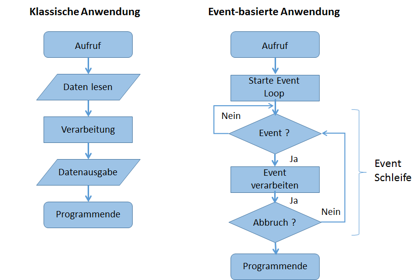

Graphische Benutzeroberfächen
Einführung
GUI-Programmierung
-
Eine Anwendung mit graphischer Benutzeroberfläche (GUI) programmieren
- Ein GUI setzt sich aus Fensterelementen zusammen (Widgets): Menü, Statusleiste, Formulare, Listenfelder, Textfelder, etc
- Elemente werden in Bibliotheken vorgehalten
- Oft vom Betriebssystem abhängig: Windows, Mac, aber auch: Plattformübergreifende WidgetSets, integrieren sich in ein Gast-System (z.B. Windows)
-
QGIS benutzt die Qt4-Widgets für das eigene GUI
- Für Python existiert das Modulpaket PyQt4
- Plugins für QGIS werden mit pyqt4 entwickelt

eine simple und minimale Anwendung
Begriffe aus der GUI-Welt
-
Widget = Window Gadget: Ein "Fensterdingsbums", kleinster Teil eines GUI
-
Dialog = ein aus 1..n Widgets bestehende GUI zur Realisierung einer spezifischen Nutzerinteraktion, oft auch als Formular bezeichnet (s. Abb.)
-
MainWindow = Hauptfenster einer Applikation, mit Buttons und Menüs, welche bestimmte Funktionen ausführen oder Dialoge aufrufen (s. QGIS)
-
GUI = Graphical User Interface: Graphische Benutzerschnittstelle; Oberbegriff
- Maus+Tastatur+Bildschirm (oder andere Eingaben mit Graphischer Entsprechung)
- Ereignis-Programmierung: Fensterobjekte– Datenobjekte – Eingabeobjekte interagieren miteinander und manipulieren sich gegenseitig

Häufig verwendete QtGUI-Widgets in Dialogen
Dokumentation
PyQt5 Reference Guide Übersicht python.org
Aufbau einer PyQt4-Anwendung
Hello World
- Benötigte Module importieren und Funktion main() einrichten
import sys
from PyQt5.QtWidgets import *
def main(argv):
pass
if __name__ == '__main__':
main(sys.argv)
-
Die Anwendung kann auch Kommandozeilenargumente verarbeiten, daher wird
sys.argvübergeben. -
Jede PyQt-GUI-Anwendung benötigt ein QApplication Objekt. Dieses stellt allgemeine Informationen wie z.B. das Anwendungsdirectory, Bildschirmparameter und v.A. den Event-Loop zur Verfügung.
import sys
from PyQt5.QtWidgets import QApplication, QTextEdit
def main(argv):
# each Qt-Programm needs an application object
app = QApplication(argv)
# to show the string Hello World in a window
textEdit = QTextEdit()
textEdit.setText("Hello World")
# show window
textEdit.show()
app.exec_()
if __name__ == '__main__':
main(sys.argv)
-
Ein QTextEdit Widget wird erstellt: In PyQt kann jedes Widget als Top-Level Fenster dienen. Ist dies der Fall, wird ihm automatisch die typische Titelzeile und u.a. der X-Button verliehen.
-
Nachfolgend wird ein "paint event" zur Anzeige des Widgets in den Event-Loop eingesetzt. Damit steht die Anzeige des Widgets in der Warteschleife.
-
Schließlich muss man den Event-Loop starten, das Widget erscheint am Bildschirm, bis X gedrückt wird.
textEdit.resize(250, 450)
textEdit.move(300, 300)
textEdit.setWindowTitle('Simple')
# show window
textEdit.show()
app.exec_()
Ein QTextEdit als top level widget erlaubt es, Parameter des Fensters zu setzen
Der Qt-Event-Loop
 :Herkömmliches und Event-basiertes Programm
Objektorientierung
Ein Dialog-Fenster mit Textfeld wird als Klasse definiert:
import sys
from PyQt5.QtWidgets import (QApplication,
QDialog,
QTextEdit,
QVBoxLayout)
class MyForm(QDialog):
def __init__(self):
QDialog.__init__(self)
self.textEdit = QTextEdit('Hello World!')
self.textEdit.selectAll()
layout = QVBoxLayout()
layout.addWidget(self.textEdit)
self.setLayout(layout)
app = QApplication(sys.argv)
form = MyForm()
form.show()
app.exec_()
- self ist das Dialogobjekt
- ein QVBoxLayout-Objekt ordnet andere Widgets vertikal an
- setLayout() ist eine Methode, um in dem Dialog self ein QTextFeld anzuzeigen
- self.textEdit: unter dieser Variable bleibt das Textfeld ansprechbar
Events mit Signals and Slots
- Events als Nachrichten zwischen Objekten
- Jedes Widget kennt eigene Events und kann eine Funktion vorsehen, um diese zu verarbeiten
-
Signals and Slots, als Konzept,
- definiert ein Signal, etwa 'clicked()' für ein QPushButton,
- das einen Slot in einem anderen Objekt (dem Empfänger) belegt,
- und dort eine Funktion ausführt.
-
Die Basis hierfür ist die Funktion connect, die jedes Qt-Objekt ausführen kann
QObject.[signal_name].connect(function)
z.B. das Push-Button-Widget pbOK soll ein click-Event auslösen und über die Funktion doOK() verarbeiten:
pbOK.clicked.connect(doOK)
'Hello World' mit OK-Button
import sys
from PyQt5.QtWidgets import (QApplication,
QDialog,
QTextEdit,
QVBoxLayout,
QPushButton) # new
class MyForm(QDialog):
def __init__(self):
QDialog.__init__(self)
self.textEdit = QTextEdit('Hello World!')
self.textEdit.selectAll()
self.buttonOK = QPushButton() # new
self.buttonOK.setText('OK')
layout = QVBoxLayout()
layout.addWidget(self.textEdit)
layout.addWidget(self.buttonOK) #new
self.setLayout(layout)
self.buttonOK.clicked.connect(self.doOK) # new
def doOK(self): # new
self.textEdit.setText("Hello PyQt5!")
app = QApplication(sys.argv)
form = MyForm()
form.show()
app.exec_()
Noch ein Signal and Slot? Wir nehmen einen eigenen Button zum Schließen des Fensters:
self.buttonOK.clicked.connect(self.doOK) # den haben wir schon...
self.pbOK.clicked.connect(self.close) # QDialog besitzt bereits einen Slot close
In einer Class referenziert self immer das aus der Klasse abgeleitete Objekt. self.close wurde zwar nicht in der class MyForm definiert, aber in der vererbenden Klasse QDialog.
Zusätzlich können wir aber auch die Methode close des QDialogs überschreiben:
def close(self):
print(self.textEdit.toPlainText())
QDialog.close(self)
https://pythonspot.com/gui/
Qt-Layout
- Sehr umfangreiche Layout-Einstellungen
- QVBoxLayout und QHBoxLayout oder QGridLayout bieten grundlegende Möglichkeiten zum Layout
- erweitertes Beispiel zu Hello World zeigt den Einsatz
- Layout können auch geschachtelt werden, d.h. ein layout kann ein anderes enthalten
Dialoge
Wir unterscheiden:
- Dialogboxen, die bereits als Klassen bestehen:
- Nachricht mit Ja/Nein, File Save/File Open, Farbwahl, Eingabezeile etc. Dokumentation
- Eigene Formulare und Dialoge auf Basis von Qdialog
- sind an ein anderes Widget (z.B. MainWindow) gebunden
- können modal oder unabhängig sein
- geben einen Wert zurück
Schema eines modalen Dialogs
Bestehende Dialoge
Ein Dialog für eine Eingabe:
text, ok = QInputDialog.getText(self, 'Titel',
'Eingabeaufforderung')
liefert einen String zurück und außerdem den Wert für OK mit true bzw. false, je nachdem, ob der Benutzer OK geklickt hat, ober nicht.
Aufgerufen wird der Dialog von einem anderen Widget via Signal/Slot:
# self is a QDialog
self.btn = QtGui.QPushButton('Dialog', self)
self.btn.clicked.connect(self.showInputDialog)
def showInputDialog(self):
text, ok = QtGui.QInputDialog.getText(self, 'Input Dialog',
'Enter your name:')
if ok:
print text
Ein funktionierendes Beispiel zum Aufruf eines MessageBox-Dialogs
import sys
from PyQt4.QtCore import *
from PyQt4.QtGui import *
app = QApplication(sys.argv)
w = QWidget()
result = QMessageBox.question(w, 'Message', "Do you like Python?",
QMessageBox.Yes | QMessageBox.No, QMessageBox.No)
if result == QMessageBox.Yes:
print "yes"
else:
print "no"
w.show()
app.exec_()
Ein Beispiel für den Aufruf verschiedener Dialoge aus dem ZetCode PyQt4 tutorial von Jan Bodnar und pythonspot:
(Jan Bodnar importiert das Modul QtGui anstelle von from PyQt4.QtGui import *)
import sys
from PyQt4 import QtGui
examples = ["input", "color", "fileopen"]
class Example(QtGui.QWidget):
def __init__(self, example):
super(Example, self).__init__()
self.initUI(example)
def initUI(self, example):
self.btn = QtGui.QPushButton('Dialog', self)
self.btn.move(20, 20)
if example in examples:
if example == "input":
self.btn.clicked.connect(self.showInputDialog)
elif example == "color":
self.btn.clicked.connect(self.showColorDialog)
elif example == "fileopen":
self.btn.clicked.connect(self.showFileOpenDialog)
else:
self.btn.clicked.connect(self.showMessageDialog)
self.le = QtGui.QLineEdit(self)
self.le.move(130, 22)
self.setGeometry(300, 300, 290, 150)
self.setWindowTitle('Input dialog')
self.show()
def showInputDialog(self):
text, ok = QtGui.QInputDialog.getText(self, 'Input Dialog',
'Enter your name:')
if ok:
self.le.setText(str(text))
def showColorDialog(self):
col = QtGui.QColorDialog.getColor()
if col.isValid():
self.setStyleSheet("QWidget { background-color: %s }" % col.name())
def showFileOpenDialog(self):
fname = QtGui.QFileDialog.getOpenFileName(self, 'Open file', '.')
self.le.setText(fname)
def showMessageDialog(self):
result = QtGui.QMessageBox.question(self, 'Message', "Do you like Qt?", QtGui.QMessageBox.Yes | QtGui.QMessageBox.No, QtGui.QMessageBox.No)
if result == QtGui.QMessageBox.Yes:
self.le.setText("Ja")
else:
self.le.setText("Nein")
def main():
app = QtGui.QApplication(sys.argv)
ex = Example("")
sys.exit(app.exec_())
if __name__ == '__main__':
main()
Zum Testen der Dialoge setzen wir für das Argument in Example("") einen Wert aus der Liste ein: examples = ["input", "color", "fileopen"], ein leerer String öffnet einen Ja/Nein-Dialog.
Die einzelnen Dialoge sind auch konfigurierbar. Hier die Varianten für den QFileDialog
- Kann Selektionen von einer oder mehreren Dateien beim Laden, Verzeichniswahl beim Speichern von Dateien etc. vornehmen
- Standardpfad und Dateifilter können u.a. übergeben werden
- Unter der Vielzahl an Methoden des QFileDialog, sind die folgenden fast selbsterklärend:
Methoden aus der Qt- C++-Dokumentation
Aufgabe ein eigenes Widget zur Anzeige des Pegelverlaufs von Pegelonline
Textfeld (oder besser: ComboBox) für Stationsnamen, Anzahl der Tage als
eigene Dialoge
- Eigene Dialoge sind stets Kinder von QDialog
- Ein eigener Dialog wird in einer eigenen Klasse definiert, meist in einem eigenen Modul (Wiederverwertbarkeit!)
- Fast alle Dialoge benötigen Buttons zum Abschluss einer Eingabe
- Alle anderen erforderlichen Widgets können über Layouts eingebunden werden
- der Dialog ist in der Regel von einem anderen Fenster abhängig (parent-Eigenschaft)
Buttons eines Dialogs einrichten:
- die klassische Kombination aus „OK/Cancel“ Buttons kann als einzelnes Widget umgesetzt werden
- Hierdurch bleibt die Reihenfolge der Buttons stets konform mit den Gepflogenheiten der jeweiligen Plattform (GNOME und MacOS X benutzen „Cancel/OK“)
buttonBox = QDialogButtonBox(QDialogButtonBox.Ok|QDialogButtonBox.Cancel)
Die Buttonbox definiert eigene Signals für die Buttons:
self.connect(self.buttonBox, SIGNAL("accepted()"), self.accept)
self.connect(self.buttonBox, SIGNAL("rejected()"), self.reject)
Um den Dialog aufzurufen, wird eine zusätzliche Event-Schleife benutzt.
Beispiel: Früchtedialog
import sys
from PyQt4.QtGui import *
from PyQt4.QtCore import *
class DialogFruits(QDialog):
def __init__(self, parent=None):
super(DialogFruits,self).__init__()
self.value = ""
self.setupUI(parent)
def setupUI(self, parent=None):
dialogLayout = QVBoxLayout()
radioLayout = QHBoxLayout()
self.b1 = QRadioButton("Apple")
self.b1.toggled.connect(lambda:self.btnstate(self.b1))
self.b1.setChecked(True)
self.btnstate(self.b1)
radioLayout.addWidget(self.b1)
self.b2 = QRadioButton("Banana")
self.b2.toggled.connect(lambda:self.btnstate(self.b2))
radioLayout.addWidget(self.b2)
self.b3 = QRadioButton("Orange")
self.b3.toggled.connect(lambda:self.btnstate(self.b3))
radioLayout.addWidget(self.b3)
dialogLayout.addLayout(radioLayout)
b1 = QPushButton("ok")
b1.clicked.connect(lambda:self.close())
dialogLayout.addWidget(b1)
self.setLayout(dialogLayout)
self.setWindowTitle("Fruits")
self.setWindowModality(Qt.ApplicationModal)
def btnstate(self,b):
self.value = b.text()
def getValue(self):
return self.value
if __name__ == '__main__':
app = QApplication(sys.argv)
test = DialogFruits()
test.show()
app.exec_()
print test.getValue()
Ein Früchtedialog mit Testaufruf. Wir speichern es als eigenes Modul dialogfruits.py
In einem Hauptfenster rufen wir den Dialog auf. Hierzu übernehmen wir das Hauptfenster aus dem Beispiels der Standarddialoge und passen es etwas an:
import sys
from PyQt4 import QtGui
from dialogfruits import DialogFruits
class Example(QtGui.QWidget):
def __init__(self, example):
super(Example, self).__init__()
self.initUI(example)
def initUI(self, example):
self.btn = QtGui.QPushButton('Fruits', self)
self.btn.move(20, 20)
self.btn.clicked.connect(self.showFruitsDialog)
self.le = QtGui.QLineEdit(self)
self.le.move(130, 22)
self.setGeometry(300, 300, 290, 150)
self.setWindowTitle('Choose a Fruit!')
self.show()
def showFruitsDialog(self):
dlg = DialogFruits(self)
dlg.exec_()
v = dlg.getValue()
self.le.setText(v)
Ein Connect richtet das Event ein, in dem der Dialog aufgerufen wird. In showFruitsDialog() sehen wir, dass das Dialogfenster eine eigene Event-Loop bekommt.
Eine weitere Erleichterung ergibt sich durch eine eigene Methode um den Event-Loop mit dlg.exec_() zu verbergen. Häufig wird hierfür der Name run() oder open() gewählt:
# in der Dialog-Klasse:
def run(self):
self.exec_()
return self.getValue()
und so wird der Dialog dann aufgerufen:
def showFruitsDialog(self):
dlg = DialogFruits(self)
# alt:
# dlg.exec_()
# v = dlg.getValue()
# neu:
v = dlg.run()
self.le.setText(v)
Bildanzeige
import urlreader3
import sys
from PyQt4.QtGui import *
def showimage(imgData, mylabel):
pixmap = QPixmap()
pixmap.loadFromData(imgData)
mylabel.setPixmap(pixmap)
mylabel.resize(pixmap.width(), pixmap.height())
app = QApplication(sys.argv)
# to show the string Hello World in a window
aLabel = QLabel()
url = u"http://pegelonline.wsv.de/webservices/rest-api/v2/stations/BONN/W/measurements.png?start=P15D&width=925&height=220"
imgdata = urlreader3.getDataResponse(url)
showimage(imgdata, aLabel)
# show window
aLabel.show()
app.exec_()
QtDesigner
Mit dem Qt-Designer können GUI's und Widgets interaktiv erstellt werden. Hier gibt eine kurze Einführung. Der QtDesigner ist Teil der PyQt-Installation.
:Aufruf des QtDesigners